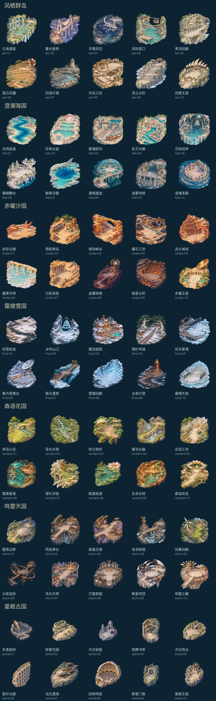

星渡 · 本版更新
七国航路，重新整理
内部 TestFlight 8.0.0（19）已就绪。
这一版有什么
- 人物、航图、招募、图鉴四页各自承担一件事，配置从人物页按需展开。
- 七国七十处地点各有自己的场景与敌人配置。国家和关卡按首通顺序开启，四档难度单独说明。
- 41条敌人资料与战斗共用定义。先查看轮廓、元素和攻击特点，再前往对应地点。
- 六档弹道随武器1 / 10 / 20 / 30 / 40 / 50级永久解锁，受伤不会降档。角色经验、金币和锻晶各司其职。
保留熟悉的飞行手感
竖向卷轴、单指相对拖动和自动射击。前三关顺序、治疗拾取和有限大招继续保留。
完全离线单机，无付费、限时招募或联网要求。旧人物、收藏、资源、保底和通关记录保留。
已经核对
网页 114 项检查通过，覆盖短屏、手机和平板，包含配置保存失败重试、国家锁定、图鉴互跳和离线实战。
iPhone / iPad 自动化验收及开声音 Release 检查已通过。
模拟器与自动回放的结果不等于实体手机 GPU、温控或真人长期体验实测。
七国风景
从绿崖与浅湾，飞往沙城、雪港、根谷、雷城和古都。
